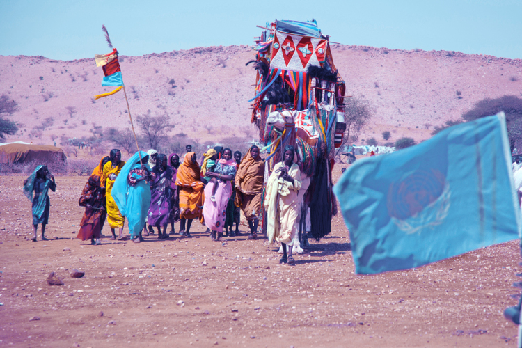

Since 2003, conflict in Sudan’s Darfur region between government forces and armed rebel groups has taken a major toll on civilians, leaving thousands dead and millions displaced. In 2007, the Security Council established the African Union-United Nations Mission in Darfur (UNAMID), the largest-ever peacekeeping operation, mandated to protect civilians and support the peace process in the region. In 2012, the UN applauded a milestone in the ongoing peace process, the inauguration of the Darfur Regional Authority, a body intended to facilitate peace in the war-torn region.
Shown Members of the Arab Mahammid community return to Damra Toma, North Darfur State, in February 2012 following nine years of displacement. UN Photo/Albert González Farran
